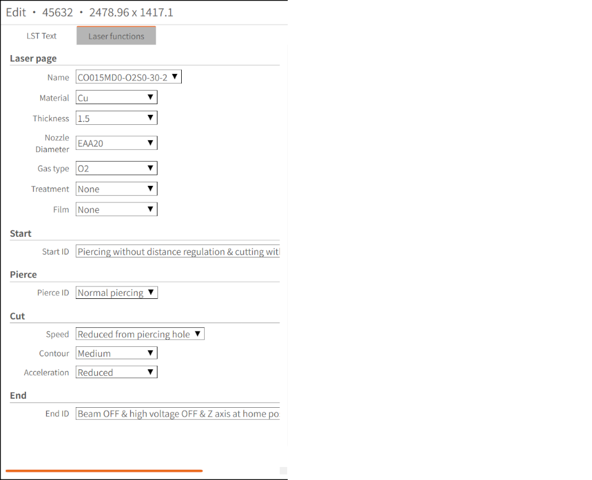
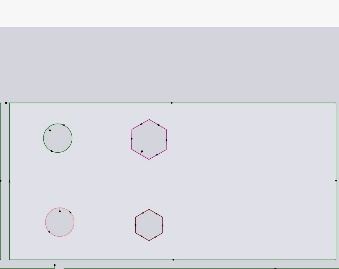

Edit Laser Technology
General
This option allows the operator to respond to and resolve any issues that may arise at the machine.

Laser page
User can select the laser page as per the requirement in laser functions. Likewise, it can be edited manually in DIN text G253 command. Changes done in anyone will be implemented in both DIN text and laser functions.
-
Material: Specifies the type of material.
-
Thickness: Defines the thickness of the material.
-
Nozzle Diameter: Sets the diameter of the nozzle used for cutting.
-
Gas Type: Determines the assist gas used in the cutting process.
-
Treatment: Refers to any pre-processing or post-processing treatments applied to the material.
-
Film: Specifies whether a protective film is present on the material surface, which may affect cutting parameters.
Pierce
User can select the pierce type based on their preferences.
-
Height control : It controls the process of distance regulation during piercing. Generally, after positioning to Pierce Stand-off distance, the height control will be switched off. This will avoid the jitter of cutting head due to spatter of materials during piercing and there-by improve the quality of piercing. It is possible to keep the height control ON during thin sheet piercing or other special conditions, to improve the process time.
-
Beam : It controls the beam ON/OFF when switching from piercing to cutting parameters. Generally, after piercing is completed, the beam will be switched OFF and the laser parameters are updated to cutting values, then beam is switched ON and start to cut.
-
Cool time : It controls the ON/OFF cool time parameter in piercing. At the end of each step/stage of piercing, a cool time is defined in the parameter. During this time, the beam will be OFF to cool the material and then start again which will avoid the overheating of material during piercing.
-
Side air blow : It controls the ON/OFF side air blow solenoid valve for a duration of time defined in the piercing parameter. High laser powers are used to pierce the thick materials and at the end of piercing, a high-pressure air is blown from the sides to cool the material, removal of spatters etc., such that the cutting is not affected.
-
Burr clean : It controls the call of burr clean sub program at the end of piercing. After piercing is completed, in certain materials a molten lava will be formed on the top of material like a mountain. In order to clear this molten material, a sub program will be called to move the head with high pressure over the lava to clear it. The gas type and pressure are defined in the machine parameters.
-
Frequency ramping : It will control the Frequency ramping in piercing. If the selected piercing method is Power/Duty/Gap varied piercing (PM=22 to 27), it will also ramp the frequency. It is invalid in other type of piercing methods.
Cut
User can cut based on their preferences (by changing the process, contour type). Based on the contour type, the drawing will be rendered in the corresponding colour mentioned below:
Small contour = Orange
Medium contour = Pink
Large contour = Green
Marking = Brown

-
Lead-in : It controls the ON/OFF Lead-in function in the PLC. In NC program, the Lead-in length is defined for each cut of the contour and can be adjusted via the Lead-in adjust length in data base parameter. If activated, will use the start parameters of particular contour and once the defined distance is reached, it switches to contour parameters.
-
Pre hole : It controls the call of Pre-hole sub program before the start of actual cutting. If activated will use the Pre-hole parameters available in the database. Once the Pre-hole is completed the parameters are switched to contour values.
-
Fly control : It controls the masking of outputs from PLC to NC for the fly process.
-
Retrace lead-in : It controls the retrace function of the Lead-in cut. If Lead-in bit is active and Lead-in cut is finished, then the head is retraced back to the same Lead-in path length with beam OFF, but with active height control. Again, the cutting is started with contour parameters, thereby the Lead-in length is cut by two sets of parameters for better kerf width and cleaning of the burrs.
-
Remnant cut : It will control the remnant cut of the sheet at the edges. If Remnant cut bit is active, then the M14 command will not switch on the laser beam, apart from that other functions such as height positioning, Gas ON etc., will be completed.
Laser end
They are based on the retract distance of Z-axis along with the Frog jump, HC freeze, End param, etc., at the end.
-
Z-retract : The user can specify the retract distance of the Z-axis at the end of cut.
-
Frog jump : It controls the ON/OFF Frog Jump function of Z-axis. Generally, after the cutting is finished, the Z-axis is first moved to retract position and then the X & Y axis are positioned to next operation point. With frog jump enabled, the Z-axis start to move to retract position, at the same time the X & Y axis are also starts to move. If Z-axis is not reached the retract position, but the X & Y axis are going to complete the target position, then the Z-axis retract motion is aborted and stand-off position is activated. Hence the X, Y & Z-axis positions are ready for next operation. By this way, the process time is improved.
-
Freeze height control : It controls the freeze of Height control (HC) at the end of cutting. The distance before which the freezing to be active is defined in the data base parameter. If there is no material at the end of the cut it may cause the head to move below sheet level. To avoid a potential collision the movement of head will be frozen at the end of cut.
-
End param : It controls the enable/disable of using the 'End parameters' at the end of cutting. The distance before which the end parameters are to be enabled is defined in the database parameter. At the end of cutting, it is possible to switch to different parameters on the fly for better finish of the job due to deceleration of the axes.
-
Beam : It will turn the Beam OFF before some distance at the end of cut, to enable a microjoint.
Microjoint
Small uncut section to keep parts attached to the sheet, preventing movement.
-
Microjoint width: User can select the similar contours by selection and enable a microjoint with value range from 0 to 3. Default value is +0.7mm.
Small uncut section to keep parts attached to the sheet, preventing movement.
-
Microjoint width: User can select the similar contours by selection and enable a microjoint with value range from 0 to 3. Default value is +0.7 mm.